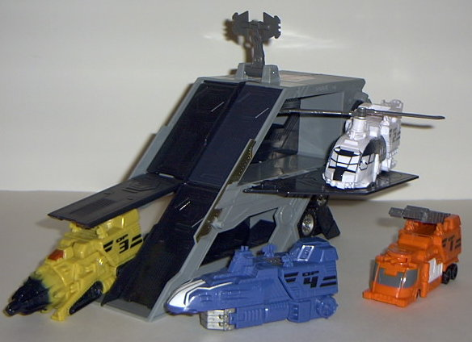
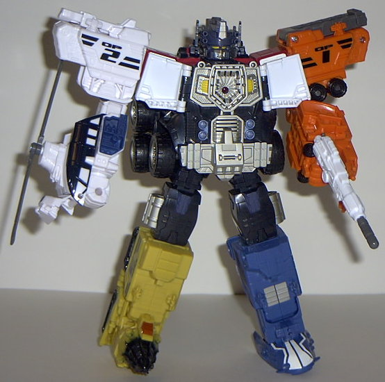

Vehicle mode is a futuristic
truck and trailer. Although in this case, "futuristic" is just an excuse
to be lazy with the robot mode extras. This mode looks absolutely terrible.
The truck cab is barely even recognizable as one, it's got so much junk
on it. The back of the robot head is pretty clearly on the top of it. The
super robot mode extra parts just pretty much hang off the top without
even trying to look like anything else. And the arms also slope down from
the top to the rear without any particular fanfare, especially since there's
absolutely no truck that has two rectangular prisms sticking out its backside.
With the exception of the front grill and windows, wheels, and that there's
a truck bed in the back, the truck cab doesn't really have the proportions
or features of a truck. It's just that bad. The trailer is little better-
it's basically just a rhombus with wheels. Yeah, that makes a REAL convincing
trailer... At least the color scheme is decent- it's the classic red, blue,
and gray of Prime, only with less blue and more gray. There's also a good
amount of mold and paint detailing, for the most part. But that's not nearly
enough to save this mode.
And you'd think, at
least, that with that extra-ridden of a vehicle mode, that his robot mode
must just really rock. Nope; the proportions in this mode are probably
the worst out of all the recent Primes, too. He's just way too tubby and
fat- his middle is HUGE in comparison to his short arms, small head, and
rather skinny legs. (And speaking of his legs, they're fatter at the thighs
than below the knees, deepening even more the impression that he's overweight.)
His six large wheels, all at the stomach and thighs, also help to give
him the "tubby" feel. His super robot mode head parts still hang off his
back unceremoniously. His head, for some inexplicable reason, actually
has a MOUTH molded into it, with a nice happy smile. Euugh. It looks so
stupid- it's just not Prime. His head's also rather square and dull- no
sleek, slanting antennae like you had on
Armada
Prime
. The only real positive thing I have to say about this mode is
that at least Prime's articulation is good. He can move at the shoulders
(at two points), the elbows, the hips, the knees, and the head. His small
feet still somewhat limits the number of poses you can get him into, though.
Prime's Autobot spark crystal is on his left shoulder in this mode, and
the gun he comes with is your standard missile-firing blaster.


You don't so much "transform"
Prime's trailer into a base as just turn it onto another side and flip
out a few things, like a satellite and a support stand. And then you have
Prime's drones pop out of their respective compartments. (You can push
forward on the levers underneath their compartments quickly to "launch"
the drones, but it's not like they just zoom out or anything.) The drones
are actually pretty cool, though. The OP-1 drone is a futuristic fire truck,
complete with a little extendable ladder and moving guns above the windows.
It's a rather obnoxious color of orange, though. The OP-2 drone is a helicopter.
(It's also the only OP drone with a fake door- you don't launch the helicopter
out, you just fold down the panel on the side to become a landing pad which
it can "take off" from.) The blades can spin, but the lower one always
keeps hitting the back part of the vehicle, so you can never really get
'em going. The tail of OP-2 is also rather puny when compared to the main
body. OP-3 is a mining vehicle, and when you roll it along on a flat surface,
the drill spins at a pretty good rate. There's also a small cockpit above
the drill. OP-4 is a submarine with a claw underneath it, for some reason.
This is the only OP drone that suffers from its combination scheme, as
it's so obvious it's just an arm with some submarine stuff on top of it.
It also doesn't really have any special features. By moving a switch on
Prime's back to the number of the appropriate OP drone and then pressing
a button above the switch, Prime can also emit sound effects for each of
his drones. A horn sound is emitted for the OP-1 drone, a blades-rotating
sound for OP-2, a digging sound for OP-3, and a sonar sound for OP-4.
Prime can combine with
all four of his drones to form Powerlinx Optimus Prime. His drones can
combine with him as either arms or legs in any configuration, just like
the "Scramble City" G1 gestalts of old. OP-1 and OP-2 have "normal" arms,
while OP-3 forms a drill arm and OP-4 forms a claw arm. The best configuration
tends to be the one pictured above, in my opinion. Prime's Powerlinx robot
mode is fairly good, although it still does suffer from a few problems.
For one, his head still looks stupid, especially with that darned smile
and the fact that now he has a bunch of hair curlers on the side of his
overly large helmet. The six wheels on the sides of his torso still bug
me, although at least his main body is more in proportion with the rest
of him now. The way that his front chest panels merely fold out to his
sides is kinda... weird. If you push in on the left side chest panel, though,
it in turn pushes a button that activates a sound effect while the small
red light in the center of Prime's chest flashes. What exactly that sound
effect is supposed to be, I don't know. It sounds like some kind of laser
blast mixed with bubbles. Meh. However, what is impressive is that even
as a gestalt, Prime retains all the articulation that he had in his normal
robot mode, minus his head movement. His joints also hold up pretty well
under the added stress, with the exception of the hip joints, which seem
a little loose. This is definitely Prime's best mode.
Optimus Prime has some
decent drones and a pretty good robot mode, but his vehicle mode, individual
robot mode, and "base" are horribly terribly pathetic. I don't say this
often, but I think Hasbro should be ashamed that they let such a flawed
design make it to the final product stage, especially when it's such a
prominent character as Optimus Prime. The drones and super robot mode can't
save this $40 toy. Not recommended.
Review by Beastbot
* About a month after Energon Prime was intially released, a running change came out that filled in his faceplate to look like that of the previous Optimus Primes. Definitely a welcome change, as it doesn't make his face a pain to look at.